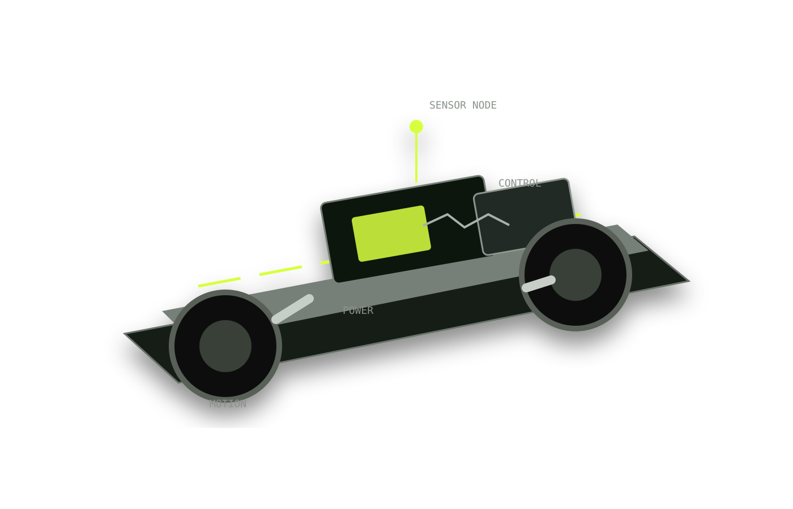
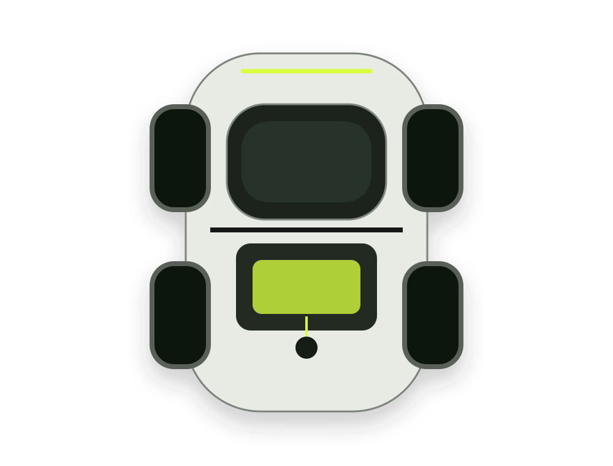

Structure
Châssis, enveloppe, supports, fixation et maintenance.
MECHANICALUne plateforme roulante compacte pour concevoir, instrumenter, tester et améliorer un système véhicule complet à échelle réduite.
Découvrir le prototype ↓Le concept
CARS concentre mécanique, énergie, commande et acquisition de données dans un format compact. Le projet sert à vérifier des choix techniques par l’essai réel plutôt qu’à présenter des performances non mesurées.
Design intent
Accès direct aux sous-systèmes, pièces remplaçables, points de mesure visibles et architecture suffisamment simple pour diagnostiquer rapidement un défaut.

Architecture
Châssis, enveloppe, supports, fixation et maintenance.
MECHANICALStockage, distribution, protection et mesure électrique.
POWERMoteur, transmission, roues et comportement dynamique.
MOTIONContrôle, communication, télémétrie et arrêt de sécurité.
CONTROLCapteurs et mesures utiles à la compréhension de l’environnement.
SENSINGFirmware, configuration, logs, validation et analyse.
SOFTWARE
P01 / Baseline
La fiche prototype distingue explicitement les données connues, les objectifs de conception et les mesures qui doivent encore être validées sur le véhicule.
Validation
Méthode
Formuler l’exigence et choisir une architecture testable.
Assembler le minimum nécessaire pour tester la fonction.
Capturer les données et documenter les conditions d’essai.
Conserver, corriger ou abandonner sur la base des résultats.
Journal R&D
Créer une première configuration de référence avant toute optimisation.
Définir les points de mesure utiles avant la première campagne d’essais.
Relier chaque exigence à une procédure, une donnée et un critère de décision.